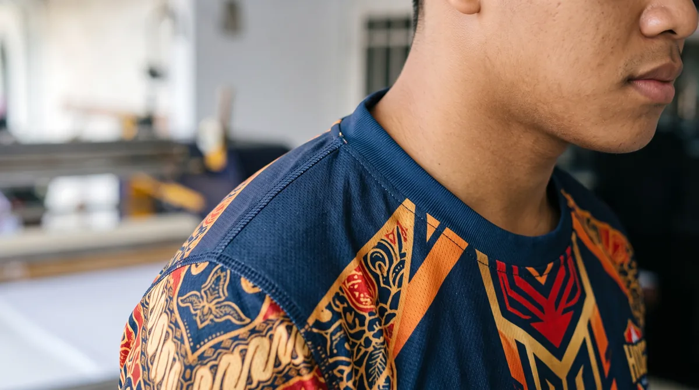

Kualitas jersey dinilai dari gabungan bahan, hasil warna, ketepatan ukuran, dan kerapian jahitan. Artikel ini membahas aspek yang perlu diperiksa agar keputusan Anda lebih tepat, baik untuk seragam komunitas, tim olahraga, sekolah, maupun kebutuhan acara.
Dalam memilih layanan jersey printing, sebaiknya pertimbangkan bukan hanya tampilan desain, tetapi juga fungsi bahan, ketepatan ukuran, dan kesiapan data pesanan. Untuk gambaran menyeluruh, baca panduan printing jersey Bandung.
Periksa cetak dan konsistensi warna
Amati ketajaman logo, sambungan motif antar-panel, dan perbedaan warna yang mencolok. Untuk motif tertentu, sedikit pergeseran dapat terjadi karena proses potong dan jahit.
Untuk memperjelas keputusan sebelum produksi, lihat juga pilihan bahan jersey full printing. Informasi tersebut membantu menyesuaikan pilihan dengan kebutuhan tim dan kesiapan pesanan.
Nilai kualitas jahitan
Lihat kekuatan sambungan, kerapian obras, kerah, ujung lengan, dan bagian bawah. Jahitan sebaiknya tidak mengganggu elastisitas maupun kenyamanan saat bergerak.

Jika ingin memeriksa detail yang berkaitan, baca tahapan produksi jersey printing. Informasi tersebut membantu menyesuaikan pilihan dengan kebutuhan tim dan kesiapan pesanan.
Lakukan pengecekan berdasarkan pesanan
Cocokkan jumlah, ukuran, nama, dan nomor terhadap daftar final. Bila memungkinkan, lakukan pemeriksaan sampel sebelum seluruh jersey dibagikan ke anggota tim.
Sebagai langkah lanjutan yang praktis, gunakan panduan cara merawat jersey printing. Informasi tersebut membantu menyesuaikan pilihan dengan kebutuhan tim dan kesiapan pesanan.
Pemeriksaan visual saat jersey diterima
Ketajaman garis dan nomor
Periksa kontur nomor punggung, huruf kecil, garis tipis, serta batas dua warna. Detail seharusnya terlihat jelas pada jarak pakai normal, bukan hanya dari jauh.
Konsistensi antarpanel
Bandingkan warna badan, lengan, dan panel samping. Perbedaan dapat muncul akibat material, pengaturan cetak, atau sambungan pola; tanyakan standar toleransinya.
Posisi elemen desain
Periksa keselarasan logo dada, nomor punggung, dan motif pada jahitan. Beberapa motif tidak mungkin menyambung sempurna karena bentuk pola, sehingga perlu kesepakatan sejak mockup.
Kualitas konstruksi yang perlu dicek
Jahitan dan obras
Lihat apakah jahitan rapi, tidak mudah terurai, dan nyaman di area yang sering bergesekan dengan kulit.
Kerah dan ujung lengan
Pastikan kerah tidak berputar, elastisitasnya sesuai, dan ujung lengan terasa nyaman saat bergerak.
Kesesuaian ukuran
Ukur sampel produk jadi dan cocokkan dengan size chart yang disetujui, dengan memperhitungkan toleransi produksi.
Checklist penerimaan pesanan tim
Hitung jumlah per ukuran
Cocokkan paket yang datang dengan rekap ukuran, nama, dan nomor. Periksa satu per satu jika desain personal berbeda.
Dokumentasikan temuan
Foto bagian yang perlu ditinjau dengan pencahayaan cukup, lalu komunikasikan berdasarkan daftar spesifikasi yang disetujui sebelum produksi.
Langkah praktis sebelum menentukan pilihan
Gunakan panduan ini sebagai titik awal, lalu sesuaikan dengan aktivitas, anggaran, kebutuhan desain, dan jumlah anggota tim. Jika terdapat spesifikasi khusus, komunikasikan sejak awal agar solusi yang ditawarkan tidak hanya terlihat menarik di gambar tetapi juga sesuai saat digunakan.
Untuk kebutuhan produksi di Bandung, pelajari juga panduan printing jersey Bandung yang menjelaskan pilihan bahan, teknik sublimasi, serta alur pemesanan. Anda juga dapat mengenal layanan jersey printing dari Zipzip dan mendiskusikan detail proyek secara langsung.
Checklist inspeksi ketika jersey diterima
Bentangkan jersey di permukaan datar dan periksa kesesuaian posisi logo, nomor, serta grafis di sambungan bahu dan samping. Perbedaan kecil di titik jahitan mungkin terjadi karena konstruksi pola, tetapi penyimpangan besar perlu dikonfirmasi kepada vendor.
Periksa kerapian obras, sambungan kerah, ujung lengan, dan benang yang terlepas. Bandingkan ukuran aktual beberapa sampel dari size yang berbeda dengan toleransi produksi yang disepakati, bukan hanya menilai satu potong.
Bandingkan warna dengan sampel cetak yang telah disetujui di pencahayaan serupa. Dokumentasikan masalah dengan foto dan jumlah unit terdampak sebelum jersey dibagikan ke anggota tim.
Untuk membandingkan pilihan secara menyeluruh, baca panduan printing jersey Bandung dan lihat layanan jersey printing Zipzip.
Periksa hasil cetak pada cahaya yang wajar
Bandingkan warna jersey dengan desain yang telah disetujui di bawah cahaya alami dan cahaya ruangan. Perhatikan apakah warna terlihat merata, detail kecil tetap jelas, dan gradasi tidak tampak putus. Foto dari layar tidak selalu menjadi acuan warna yang tepat. Jika tim memiliki warna identitas penting, gunakan proof kain yang sebelumnya disepakati. Catat perbedaan yang nyata sebelum barang dibagikan agar pengecekan dapat dilakukan secara objektif.
Kerapian jahitan di area yang aktif bergerak
Periksa sambungan bahu, ketiak, sisi badan, ujung lengan, dan bagian bawah. Jahitan seharusnya tampak konsisten, tidak banyak benang lepas, dan tidak membuat kain berkerut secara berlebihan. Coba gerakkan lengan ke atas dan ke samping untuk menilai kenyamanan. Jahitan yang terlihat rapi saat jersey dibentangkan belum tentu nyaman ketika dipakai. Sesuaikan penilaian dengan model dan jenis bahan yang dipesan.
Kecocokan ukuran lebih penting dari label
Jangan hanya menghitung jumlah jersey berlabel S, M, atau L. Cocokkan ukuran produk jadi dengan size chart yang disetujui, termasuk toleransi jahit. Jika satu tim memesan model berbeda, periksa setiap kelompok secara terpisah. Catat jersey yang perlu ditinjau sebelum pengemasan akhir. Prosedur ini penting karena ukuran yang keliru dapat membuat produk tidak terpakai meskipun kualitas cetaknya bagus.
Cek identitas pemain satu per satu
Bandingkan nama, nomor, ukuran, dan jumlah dengan daftar final. Periksa ejaan, kapitalisasi, posisi nomor, dan konsistensi font. Jangan mengandalkan pemeriksaan visual sekilas pada tumpukan jersey karena kesalahan nama mudah terlewat. Untuk pesanan banyak anggota, susun barang berdasarkan daftar atau nomor urut agar setiap item diperiksa. Dokumentasikan temuan secara spesifik sehingga koreksi tidak menimbulkan kebingungan.
Menilai kenyamanan bahan setelah printing
Sentuh bagian dalam dan luar kain, lalu periksa apakah bahan masih lentur dan nyaman. Regangkan secara wajar untuk melihat perubahan tampilan motif. Pada jersey olahraga, kemampuan mengikuti gerak tubuh dan rasa di kulit sama pentingnya dengan ketajaman warna. Bandingkan dengan sampel bahan awal jika tersedia. Jika terasa sangat berbeda, tanyakan apakah ada perubahan bahan atau proses finishing.
Jangan salah menilai sambungan motif
Motif yang melewati garis jahitan dapat memiliki toleransi pertemuan tertentu. Tanyakan standar yang disepakati sejak tahap desain; jangan langsung menyamakan semua ketidaksejajaran kecil dengan cacat produksi. Namun jika logo, angka, atau elemen utama terpotong di luar persetujuan, hal tersebut patut diperiksa. Untuk menghindari masalah, elemen kritis sebaiknya ditempatkan di area aman sejak awal.
Buat checklist penerimaan yang sederhana
Siapkan kolom untuk jumlah, ukuran, nama, nomor, warna, jahitan, dan kondisi fisik. Tandai item yang sudah lolos, lalu pisahkan barang yang perlu ditinjau. Ambil foto temuan dengan pencahayaan cukup dan sertakan nomor pesanan. Cara ini mempermudah komunikasi dengan vendor serta mencegah keluhan yang tidak teridentifikasi. Pemeriksaan dilakukan sebelum seluruh jersey dibagikan kepada anggota.
Kualitas juga terlihat dari proses persetujuan
Vendor yang baik seharusnya mampu menjelaskan spesifikasi bahan, teknik cetak, batas revisi, dan standar toleransi sebelum produksi. Pembeli juga perlu memberikan data final yang akurat. Kualitas hasil tidak berdiri sendiri: koordinasi, desain, dan kontrol produksi saling terkait. Baca alur produksi jersey printing untuk memahami titik pemeriksaan yang dapat mencegah kesalahan sejak awal.
Pertanyaan yang sering muncul
Periksa hasil cetak pada cahaya yang wajar?
Bandingkan warna jersey dengan desain yang telah disetujui di bawah cahaya alami dan cahaya ruangan. Perhatikan apakah warna terlihat merata, detail kecil tetap jelas, dan gradasi tidak tampak putus.
Kerapian jahitan di area yang aktif bergerak?
Periksa sambungan bahu, ketiak, sisi badan, ujung lengan, dan bagian bawah. Jahitan seharusnya tampak konsisten, tidak banyak benang lepas, dan tidak membuat kain berkerut secara berlebihan.
Kecocokan ukuran lebih penting dari label?
Jangan hanya menghitung jumlah jersey berlabel S, M, atau L. Cocokkan ukuran produk jadi dengan size chart yang disetujui, termasuk toleransi jahit.
Artikel terkait yang dapat membantu
- Tahapan Proses Produksi Jersey Printing dari Desain hingga Finishing
- Jenis Bahan Jersey Full Printing: Dryfit, Microfiber, dan Interlock
- Checklist Persiapan Pesan Jersey Custom untuk Tim dan Komunitas
Masih ada pertanyaan tentang spesifikasi atau kebutuhan tim? Hubungi Zipzip untuk membahas opsi yang sesuai dengan desain dan jadwal Anda.
Bacaan lanjutan untuk perencanaan jersey
Tahap berikutnya bisa dipelajari melalui panduan yang saling melengkapi berikut.